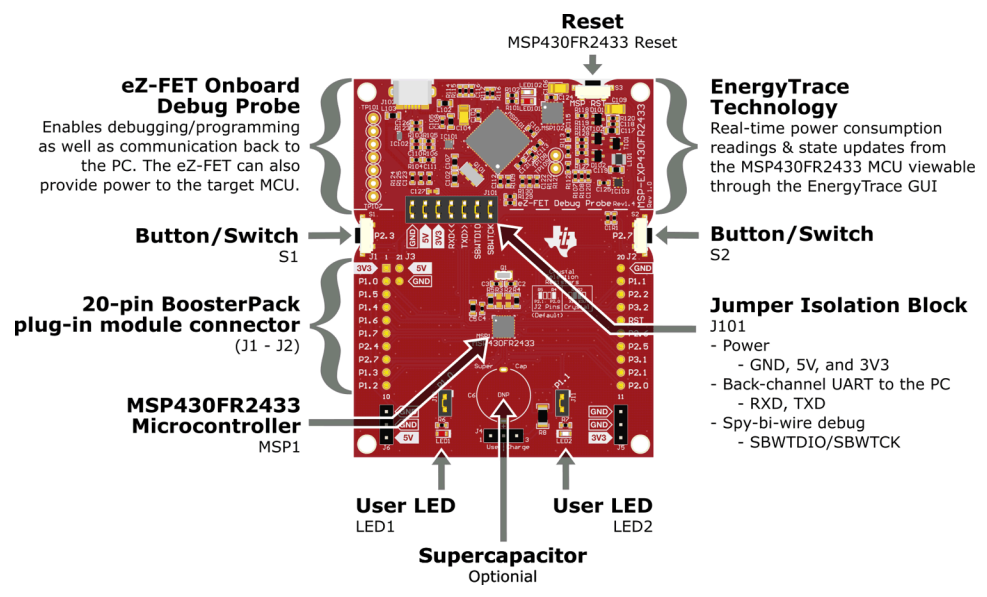
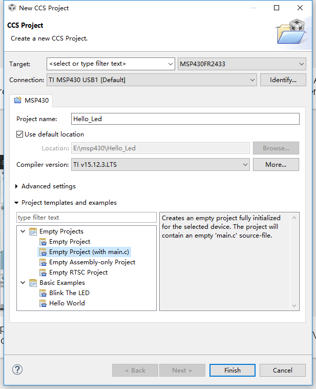
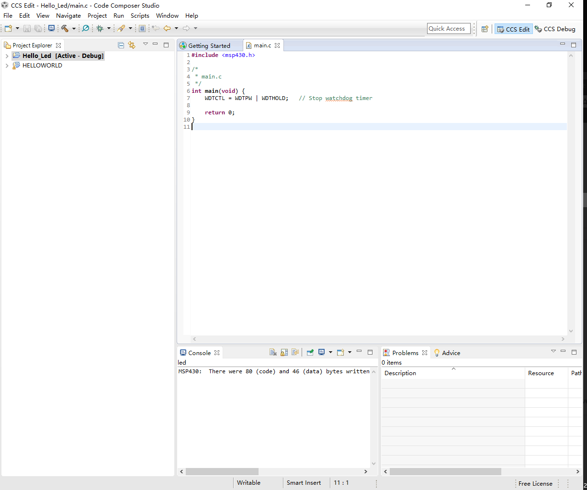
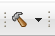
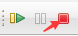

前几天花了4.3美元在TI官网买了一开MSP430FR2433 LaunchPad™ Development Kit
(MSPEXP430FR2433)，今天花一点时间来个简单的入门。板子很简单见下图

开发板自带一个调试工具和串口调试工具，性价比还是挺高的。
开发板的资源见下图：

首先我们先来一个简单的点灯例程，接下来从新建工程----编写点灯程序----效果演示顺序开始介绍
创建一个CCS工程
CCS其实就是eclipse安装了TI的一些开发插件，CCS的安装教程就不提了比较简单，从TI官网下载CCS，选择单片机的型号，接下来基本上是下一步就行了。接下来主要讲如何新建工程
File > New > CCS Project
具体配置如下：
- Target:MSP430FR2433
- Project name:Hello_Led
- Location:随自己的意愿
Project templates and examples : Empty Project(with main.c)

开始编写自己的程序
上面我们创建好了MSP430的工程，具体如下：

创建工程后系统已经添加好了msp430的头文件1
#include <msp430.h>
当然也可以自己根据具体型号添加头文件，我用的是MSP430FR2433,所以我们可以改成#include <msp430fr2433.h>这个头文件包含了 MSP430FR2433 的寄存器定义和内置函数。
main函数部分，以下是闪灯的程序，也是CCS自带的示例代码1
2
3
4
5
6
7
8
9
10
11
12
13
14
15
16int main(void) {
WDTCTL = WDTPW | WDTHOLD; // Stop watchdog timer
PM5CTL0 &= ~LOCKLPM5; // Disable the GPIO power-on default high-impedance mode
P1DIR |= BIT0; // Set P1.0 to output direction
for(;;) {
volatile unsigned int i; // volatile to prevent optimization
P1OUT ^= 0x01; // Toggle P1.0 using exclusive-OR
i = 10000; // SW Delay
do i--;
while(i != 0);
}
return 0;
}
1 | P1DIR |= BIT0; |
这一行中,我们将 P1.0 引脚设置为输出(P1.0 与开发板上 Led1 相连)。在 MSP430 中,P1DIR 是一个控制 Port1 引脚方 向的八位寄存器。如果你把某一位配置为 0,则它作输入用,反之 是输出。BIT0 是一个系统定义的常量,即 0x0001（详见<msp430fr2433.h>）。
如果一切顺利的话,现在我们可以把我们的程序下载到单片机运行了。
将程序下载到单片机
编译按钮
Debug 按钮,编译通过之后,我们按这个按钮会下载程序并进入 DEBUG 模式
红色按钮终止 DEBUG 模式
LED 程序已经下载到单片机中,如果你观察到红色的 LED 灯会随着按键亮灭,那么恭喜你,你已经完成了第一 个 MSP430的项目。